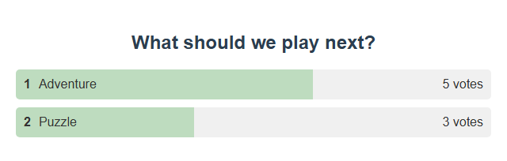

1. Choose the tool
| Goal | Open in SSN |
|---|---|
| Let chat vote on the next activity | Graphical Poll → Poll Options |
| Pick a random entrant | Wait List / Winner Draw, with winner-draw mode enabled |
| Take viewers in queue order | Wait List / Winner Draw, with winner-draw mode disabled |
Use the generated link from that section as an OBS Browser Source. Keep SSN and your chat sources active, and preserve the link’s session, password, and server options. The Giveaway Tool offers a separate pool with winner-card, name-reel, and community-wheel presentations. Use its Giveaway Options panel for dedicated giveaway controls; Wait List / Winner Draw remains available independently.
2. Run a multiple-choice poll
- Open Graphical Poll → Poll Options. Set Poll Type to Multiple Choice.
- Enter What should we play next? as the question and
Adventure, Puzzleas the comma-separated options. Set Vote Matching to Exact vote only. - Leave Allow multiple votes per user and Donation-weighted voting off for a simple one-vote poll. Turn on Enable Poll.
- Copy the generated poll link into OBS. Ask viewers to send
1or2as their whole message. Matching option text also works. - Select End Poll to close voting. Note the result before selecting Reset Poll for another round.
{kind=link}

Free-form polls accept hashtag votes; Hashtag anywhere allows a hashtag within a longer message. Save Current Poll saves a preset for reuse; it is not a permanent record of audience results. Repeated votes from the same voter are ignored unless multiple votes are enabled.
Dedicated giveaway tools
Open Giveaway Tool → Giveaway Options. Set the entry keyword, choose exact-message or separate-word matching, and optionally restrict entries to members. Click Open entries, then Draw winner when ready. Drawing closes entries automatically. Open entries again to resume the same pool; Reset clears entries and winner history and leaves entries closed.
Choose Winner card, Name reel, or Community wheel, and one of six styles. Preview uses fictional names and never joins your session. Copy the generated giveaway.html?session=YOUR_SESSION&managed link into OBS. The managed audience display contains no operator controls or session details. Style and title are link settings; entry rules are host settings applied when entries open.
All managed displays share the host's pool and selected winner. Selection uses secure random numbers with equal odds per eligible entry. Identity is deduplicated within each platform using the supplied user ID, username, or display name; different platforms are separate identities. Winners cannot re-enter until reset unless repeat winners are allowed. The pool holds up to 10,000 entries; the wheel illustrates a sample of up to 120 names for large pools, but selection always uses the entire eligible pool.
Keep SSN running. The pool is held in host memory and clears on restart or session change. Refreshing an audience page receives the current result. Membership restrictions require sources that supply membership information. Historical, replayed, private, bot, and event-only messages are excluded. Entry text must contain the configured keyword; donation value does not change odds.
API, Stream Deck, and Event Flow
The same host actions serve popup buttons, the existing HTTP/WebSocket API, and Stream Deck's generic SSN action interface. No giveaway display needs to be open to collect entries or draw. Use the existing Event Flow Webhook action with your SSN API endpoint to automate these commands.
| Action | Effect |
|---|---|
startgiveaway | Open or resume entries. Optional value: {"keyword":"!enter","match":"exact","membersOnly":false,"removeWinner":true}. Without a value, use popup entry settings. |
closegiveaway | Close entries and retain the pool. |
drawgiveaway | Close entries and select one eligible winner. Returns an error for an empty pool. |
resetgiveaway | Clear entries and winners; leave entries closed. |
getgiveawaystate | Read entry count, open/closed state, entry rules, and recent winners. |
{"action":"drawgiveaway","get":"draw-1"}
Protocol 2 Stream Deck requests use the same action names and receive correlated host responses. These responses describe giveaway state, not OBS visibility. The older standalone community wheel remains available by omitting managed; it has its own local pool and is not controlled by these host actions. Its local storage is now scoped by session and password, exact matching means the whole message, and its draw uses secure randomness.
3. Draw a winner
- Open Wait List / Winner Draw → Enable and customize. Enable the trigger and set a clear command such as
!join. - Turn on Configure as winner-draw mode instead of queue. Copy the updated link to the OBS Browser Source.
- Tell viewers the entry command and any eligibility rule. If using Only members can enter, first check that the source supplies membership information.
- Watch the entry count increase. Select Stop entries when the entry period ends, then Select winner.
- Use Download list to retain entries before Reset draw clears the round.
- Open entries Viewers type !join
- Stop entries Close the pool
- Select winner Display the selection
- Reset draw Clear for another round
4. Run a viewer queue
Use the same waitlist setup, but turn winner-draw mode off and copy its updated URL. Viewers join using your configured command.
| Button | What to do |
|---|---|
| Highlight top entry | Call attention to the next viewer. |
| Remove top entry | Advance after that viewer has taken their turn. |
| Select a name | Make a random selection rather than following queue order. |
| Stop entries | Close the queue to new arrivals. |
| Download list / Reset queue | Save a TSV copy, then clear entries when the activity is finished. |
Choose whether removed viewers may rejoin with the rejoin option. Optional waitlist control commands are limited to mod/host/admin users: !wlstop, !wlremove, !wlreset, !wlpick, and !wlhighlight. Enable these deliberately; the viewer entry command alone does not enable them.
5. Rehearse and recover
Use distinct fictional users in test messages to check voting and entry behavior. One person using two platforms is not reliably one shared identity. Confirm the result appears in OBS before inviting viewers to participate.
- No votes: check Enable Poll, whether voting was ended, exact matching, and whether that user already voted.
- No entries: check the waitlist trigger, exact command, stopped-entry state, and member-only restriction.
- Count but no list: winner-draw mode presents a pool and winners rather than a normal queue.
- OBS disagrees: replace its saved URL, check the session/password, and avoid running independently configured duplicate poll pages.
For hardware or OBS-side buttons, see Stream Deck setup and OBS control dock.